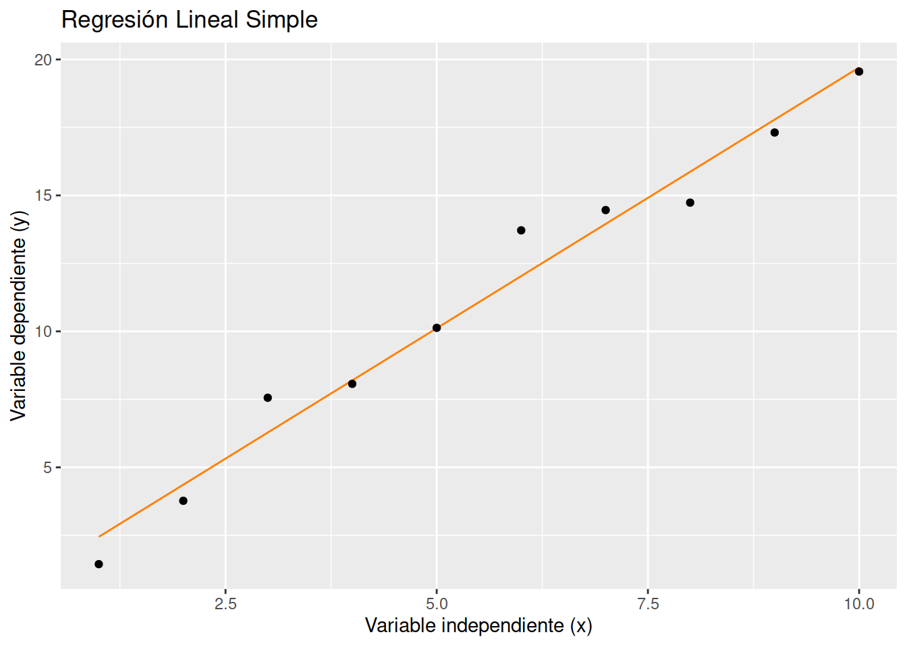
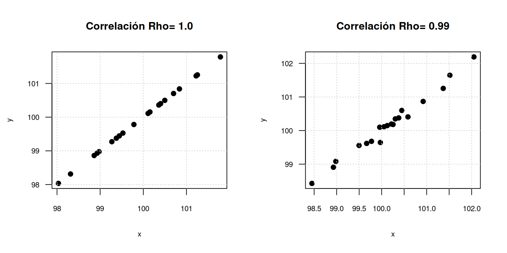
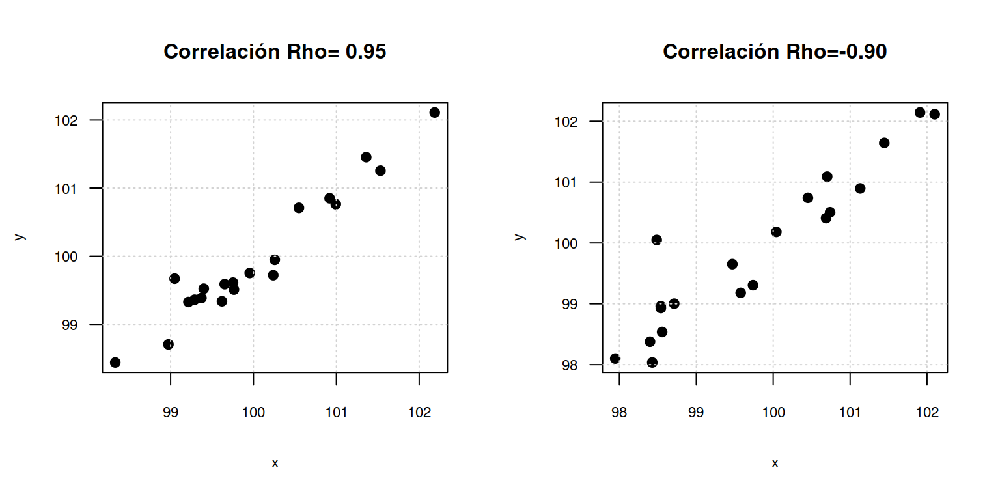
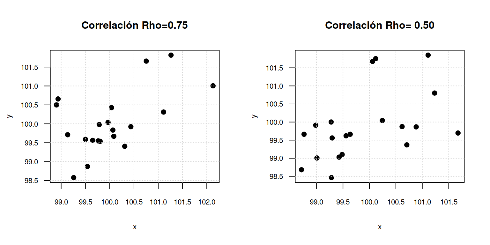
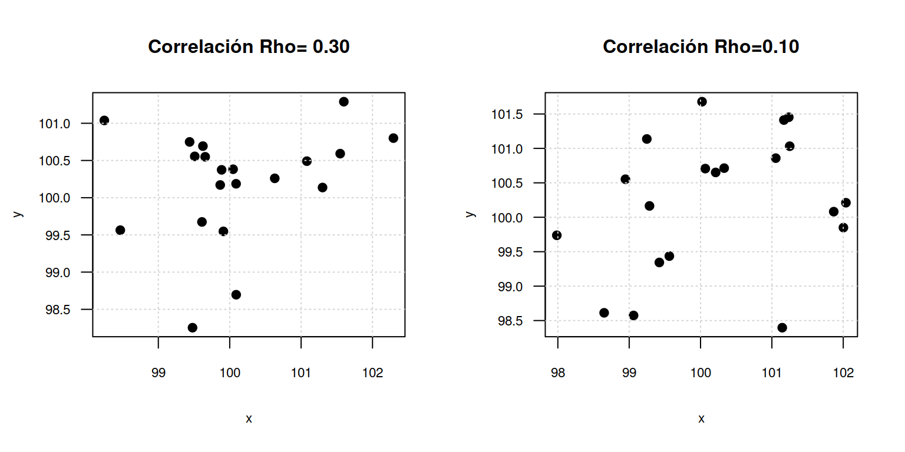
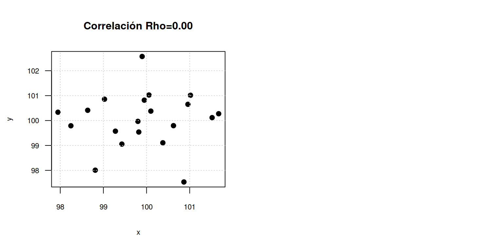
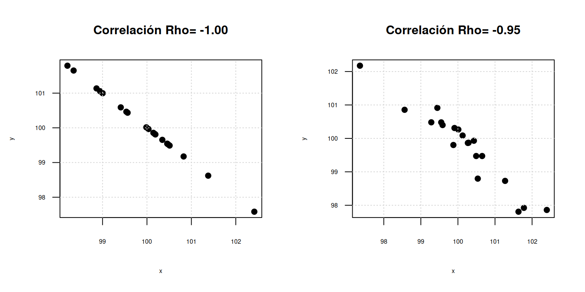
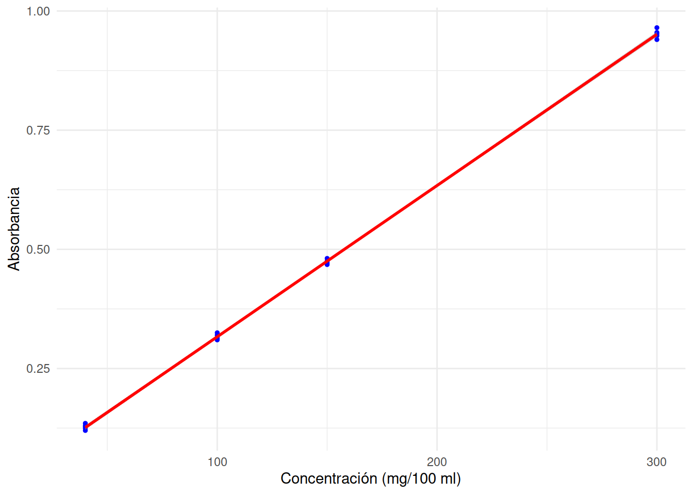
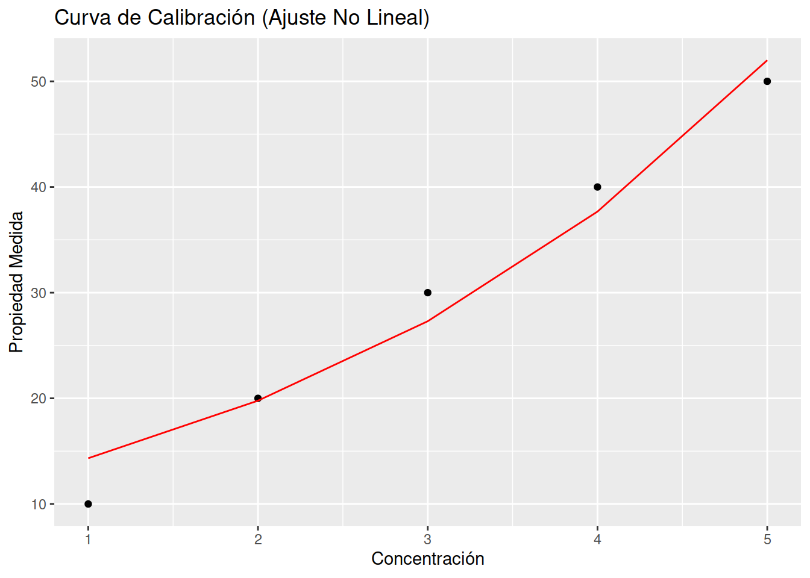
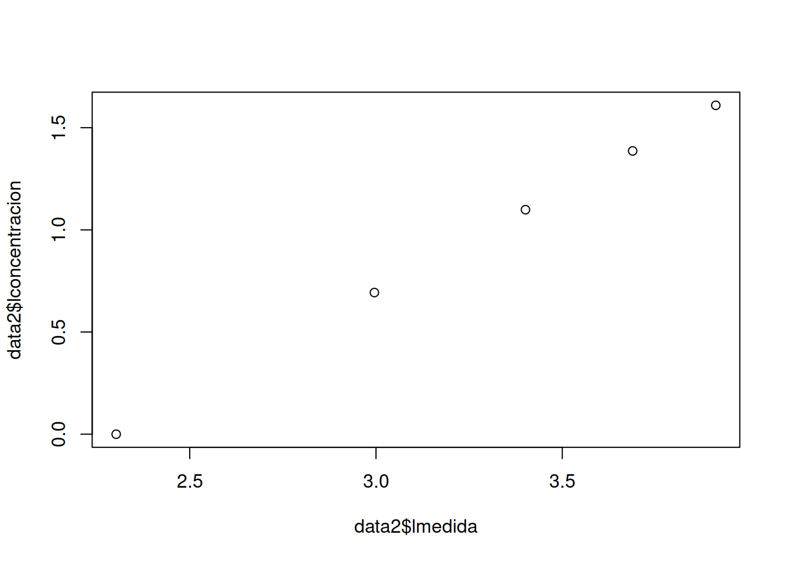

La primera forma de regresión lineal documentada fue el método de los mínimos cuadrados que fue publicada por Legendre en 1805, Gauss publicó un trabajo en donde desarrollaba de manera más profunda el método de los mínimos cuadrados y en dónde se incluía una versión del teorema de Gauss-Márkov. El término regresión se utilizó por primera vez en el estudio de variables antropométricas de Francis Galton: al comparar la estatura de padres e hijos, donde resultó que los hijos cuyos padres tenían una estatura muy superior al valor medio, tendían a igualarse a este, mientras que aquellos cuyos padres eran muy bajos tendían a reducir su diferencia respecto a la estatura media; es decir, “regresaban” al promedio. La constatación empírica de esta propiedad se vio reforzada más tarde con la justificación teórica de ese fenómeno.*
El término lineal se emplea para distinguirlo del resto de técnicas de regresión, que emplean modelos basados en cualquier clase de función matemática. Los modelos lineales son una explicación simplificada de la realidad, mucho más ágiles y con un soporte teórico mucho más extenso por parte de la matemática y la estadística.
El modelo de regresión lineal simple tiene la siguiente forma:
\[y_{i} = \beta_{0} + \beta_{1} x_{i} +
u_{i} \hspace{1cm} \text{para} \hspace{.5cm}i= 1,2,3,4, \cdots ,
n\]
Donde :
\(Y\) : variable dependiente o
respuesta
\(X\) : varialbe
independiente o regresora
\(\beta_{0}\) : intercepto
\(\beta_{1}\) : pendiente
\(u\) : error
# # Crear datos de ejemplo
# set.seed(123)
# x <- 1:10
# y <- 2 * x + rnorm(10)
#
# # Realizar una regresión lineal simple
# modelo <- lm(y ~ x)
#
# # Crear un dataframe con los datos y las predicciones del modelo
# df <- data.frame(x = x, y = y, Prediccion = predict(modelo))
# Crear un gráfico de dispersión y la línea de regresión
grafico <- ggplot(data = df, aes(x = x, y = y)) +
geom_line(aes(y = yhat), color = "#FF7F00") + # Línea de regresión
geom_point() + # Gráfico de dispersión
labs(title = "Regresión Lineal Simple",
x = "Variable independiente (x)",
y = "Variable dependiente (y)")
grafico
El grado de ajuste de los puntos con la recta, se mide a través de un coeficiente que presenta valores entre -1 y 1.
Los siguientes gráficos iluistran las relaciones simuladas para correlaciones de 1, 0.99, 0.95, 0.90, 0.75, 0.50, 0.30 y 0.00.
par(mfrow = c(1, 2),
mar = c(5, 4, 4, 2) + 0.1,
cex.lab=.7, # tamaño de etiqueta ejes
cex.axis=.7, # tamaño escalas de los ejes
cex.main=1, # tamaño del titulo
cex.sub=.5)
muestra<-gen.corr.data(1,20)
x=muestra[,2]+100
y=muestra[,1]+100
plot(x,y, pch=19,main="Correlación Rho= 1.0", las=1)
grid()
muestra<-gen.corr.data(0.99,20)
x=muestra[,2]+100
y=muestra[,1]+100
plot(x,y, pch=19,main="Correlación Rho= 0.99", las=1)
grid()
muestra<-gen.corr.data(0.95,20)
x=muestra[,2]+100
y=muestra[,1]+100
plot(x,y, pch=19,main="Correlación Rho= 0.95", las=1)
grid()
muestra<-gen.corr.data(0.90,20)
x=muestra[,2]+100
y=muestra[,1]+100
plot(x,y, pch=19,main="Correlación Rho=-0.90", las=1)
grid()
muestra<-gen.corr.data(0.75,20)
x=muestra[,2]+100
y=muestra[,1]+100
plot(x,y, pch=19,main="Correlación Rho=0.75", las=1)
grid()
muestra<-gen.corr.data(0.50,20)
x=muestra[,2]+100
y=muestra[,1]+100
plot(x,y, pch=19,main="Correlación Rho= 0.50", las=1)
grid()
muestra<-gen.corr.data(0.30,20)
x=muestra[,2]+100
y=muestra[,1]+100
plot(x,y, pch=19,main="Correlación Rho= 0.30", las=1)
grid()
muestra<-gen.corr.data(0.10,20)
x=muestra[,2]+100
y=muestra[,1]+100
plot(x,y, pch=19,main="Correlación Rho=0.10", las=1)
grid()
muestra<-gen.corr.data(0,20)
x=muestra[,2]+100
y=muestra[,1]+100
plot(x,y, pch=19,main="Correlación Rho=0.00", las=1)
grid()
Tambien puede ser una relación negativa lineal
par(mfrow = c(1, 2),
mar = c(5, 4, 4, 2) + 0.1,
cex.lab=.5, # tamaño de etiqueta ejes
cex.axis=.5, # tamaño escalas de los ejes
cex.main=1, # tamaño del titulo
cex.sub=.5)
muestra<-gen.corr.data(-1,20)
x=muestra[,2]+100
y=muestra[,1]+100
plot(x,y, pch=19,main="Correlación Rho= -1.00", las=1)
grid()
muestra<-gen.corr.data(-0.95,20)
x=muestra[,2]+100
y=muestra[,1]+100
plot(x,y, pch=19,main="Correlación Rho= -0.95", las=1)
grid()
Valores positivos, significa que a medida que la variable X aumenta, la variable Y también tiende a aumentar. Un valor cercano a 1 indica una fuerte correlación positiva.
Valores de correlación negativos, significa que a medida que la variable X aumenta, la variable Y tiende a disminuir. Un valor cercano a -1 indica una fuerte correlación.
El coeficiente de correlación empleado para el caso de dos variables numéricas corresponde al coeficiente de correlación de Pearson. Este coeficiente mide especificamente relaciones lineales. En caso de que la relación no sea una linea recta y por ejemplo sea una relación cuadrática, el coeficiente indicará un valor bajo.
El que existea un alto grado de correlación no implica caudalida, es decir que si dos valibles tiene un indicador alto de correlación, esto no implica que una variable cause a la otra.
El método Mínimos Cuadrados Ordinarios (MCO) se basa en la minimizar la suma de cuadrados de los errores (\(u\)), a través de la información contenida en una muestra
De la ecuación del modelo estimado \(\widehat{y_{i}} = \widehat{\beta_{0}} + \widehat{\beta_{1}} + \widehat{u}\) se pueden despejar los residuales . Como los errores son variables no observables, el método hace uso de sus respectivos estimadores llamados residuales:
\[\begin{equation*} \widehat{u}_{i} = (y - \widehat{y_{i}}) = \big(y - \widehat{\beta_{0}} + \widehat{\beta_{1}} x_{i} \big) \end{equation*}\]
El método encuentra el valor de los parámetros \(\beta_{0}\) y \(\beta_{1}\) que minimzan la suma de cuadrados de los erroes \(SCRes\)
\[SCRes=\sum_{i=1}^{n} \widehat{u_{i}}^{2} = \big(y - \widehat{\beta_{0}} + \widehat{\beta_{1}} \hspace{.2cm}x_{i} \big)^{2} \]
Para ello deriva la función anterior con respecto a \(\beta_{0}\) y \(\beta_{1}\)
\[\dfrac{\partial SCRes}{\partial\beta_{0}} = -2 \sum_{i=1}^{n} \big(y - \widehat{\beta_{0}} + \widehat{\beta_{1}} \hspace{.2cm}x_{i} \big) = 0\] \[\dfrac{\partial SCRes}{\partial\beta_{1}} = -2 \sum_{i=1}^{n} \big(y - \widehat{\beta_{0}} + \widehat{\beta_{1}} \hspace{.2cm}x_{i} \big)\hspace{.2cm} x_{i} = 0\]
Estas dos igualdades constituten las ecuaciones normales de las que se da solución al sistema \(2 \times 2\).
Solución:
\[b_1 = \dfrac{n \displaystyle\sum_{i=1}^{n} x_{i}y_{i} - \Bigg(\displaystyle\sum_{i=1}^{n} x_{i} \displaystyle\sum_{i=1}^{n} y_{i}\Bigg) }{n \displaystyle\sum_{i=1}^{n} x_{i}^{2} - \Bigg(\displaystyle\sum_{i=1}^{n} x_{i}\Bigg)^{2}} \]
\[b_{0} = \bar{y} - b_{1} \hspace {.1cm}
\bar{x} \]
Estos los coeficientes estimados del intercepto y de la pendiente de la recta \(\widehat{y} = b_{0} + b_{1} x\)
Como los vales de \(b_{0}\) y \(b_{1}\) son variables aleatorias, dado que sus valores cambian al cambiar la muestra que los origina, poseen entonce una función de distribución, un valor esperado o media y una varianza.
Los supuestos asociados al modelo con fines de inferencia estadistica se pueden resumir en :
La verificación de estos supuesto se puede realizar mediante la realización de pruebas de hipotesis complementadas con gráficos
modelo1 = lm(y ~ x)
summary(modelo1)
Call:
lm(formula = y ~ x)
Residuals:
Min 1Q Median 3Q Max
-0.6359 -0.2512 0.0948 0.2190 0.4527
Coefficients:
Estimate Std. Error t value Pr(>|t|)
(Intercept) 194.19794 6.76064 28.73 < 2e-16 ***
x -0.94261 0.06749 -13.97 4.23e-11 ***
---
Signif. codes: 0 '***' 0.001 '**' 0.01 '*' 0.05 '.' 0.1 ' ' 1
Residual standard error: 0.3319 on 18 degrees of freedom
Multiple R-squared: 0.9155, Adjusted R-squared: 0.9108
F-statistic: 195.1 on 1 and 18 DF, p-value: 4.225e-11Ecuación estimada del modelo por el método de mínimos cuadrados ordinarios es:
\[ \widehat{y_{i}} = 0.5255 + 1.9180 \hspace{.2cm} x_{i} \] La salida tambien contiene además de los valores obtenidos:
En este caso no se rechaza la hipótesis : \(Ho : \beta_{0} = 0\), se asume que es verdadera por lo que se puede asumir que el intercepto es cero.
En cuanto a la pendiente el valor-p = 0.0000, indica que se rechaza la hipótesis : \(Ho : \beta_{1} = 0\), se acepta que \(\beta_{1} \neq 0\), por tal razón existe un modelo lineal que relaciona a las variables.
No te que al exigir al modelo que no tenga intercepto, la pendiente cambia
modelo2 = lm(y ~ x -1)
summary(modelo2)
Call:
lm(formula = y ~ x - 1)
Residuals:
Min 1Q Median 3Q Max
-4.1073 -0.8966 0.1815 1.2608 5.2272
Coefficients:
Estimate Std. Error t value Pr(>|t|)
x 0.995794 0.004936 201.8 <2e-16 ***
---
Signif. codes: 0 '***' 0.001 '**' 0.01 '*' 0.05 '.' 0.1 ' ' 1
Residual standard error: 2.211 on 19 degrees of freedom
Multiple R-squared: 0.9995, Adjusted R-squared: 0.9995
F-statistic: 4.07e+04 on 1 and 19 DF, p-value: < 2.2e-16Se recomienda que aunque la prueba de hipótesis correspondiente al intercepto de no significativa (se asuma que es cero), se conserve el modelo con intercepto, pues de lo contrario se puede generar sesgos sobre la estimación de la pendiente.
Una curva de calibración es una representación gráfica de la relación entre la respuesta instrumental y la concentración de un analito en una serie de soluciones estándar. Las curvas de calibración se utilizan en química analítica para determinar la concentración de un analito en una muestra desconocida.
El principio de funcionamiento de las curvas de calibración se basa en la relación proporcional entre la respuesta instrumental y la concentración del analito. La respuesta instrumental es una medida de la cantidad de analito que se ha detectado por el instrumento. La concentración del analito es la cantidad de analito que se encuentra en una unidad de volumen de la muestra.
Existen dos tipos principales de curvas de calibración:
Estas curvas son las más comunes. La respuesta instrumental es directamente proporcional a la concentración del analito.
Estas curvas no son directamente proporcionales a la concentración del analito. En este caso, la curva de calibración se ajusta a una ecuación matemática para determinar la concentración del analito.
Se toma una serie de materiales - normalmente al menos tres o cuatro - de los que se conoce la concentración del analito.
Estos patrones de calibración son medidos en el instrumento analítico bajo las mismas condiciones para las empleadas para el material de ensayo
Con los resulados obtenidos se construye la gráfica de calibrado con el fin de obtener la concentración de analito por interpolación.
Este procedimiento plantea una serie de interrogantes como:
Se miden 4 nivels de concentración (40, 100, 150, 300), cada uno de ellos es replicado 5 veces, obteniendo los siguientes valores:
library(ggplot2)
# Crear datos de absorbancia y concentración
absorbancia <- c(0.125, 0.135, 0.120, 0.130, 0.128, 0.315, 0.325, 0.310, 0.320, 0.312, 0.472, 0.481, 0.468, 0.475, 0.470, 0.948, 0.965, 0.940, 0.955, 0.952)
concentracion <- c(40, 40, 40, 40, 40, 100, 100, 100, 100, 100, 150, 150, 150, 150, 150, 300, 300, 300, 300, 300)
tabla = matrix(absorbancia, ncol = 5, byrow = TRUE )
rownames(tabla) = c(40, 100, 150,300)
colnames(tabla) = c("R1", "R2", "R3", "R4", "R5")
tabla R1 R2 R3 R4 R5
40 0.125 0.135 0.120 0.130 0.128
100 0.315 0.325 0.310 0.320 0.312
150 0.472 0.481 0.468 0.475 0.470
300 0.948 0.965 0.940 0.955 0.952Estimación de la recta por MCO
# Crear un dataframe con los datos
datos <- data.frame(Concentracion = concentracion, Absorbancia = absorbancia)
# Crear un dataframe con los datos
datos <- data.frame(Concentracion = concentracion, Absorbancia = absorbancia)
modelo = lm(absorbancia ~ concentracion, data = datos)
summary(modelo)
Call:
lm(formula = absorbancia ~ concentracion, data = datos)
Residuals:
Min 1Q Median 3Q Max
-0.0110921 -0.0047657 -0.0007486 0.0037773 0.0139079
Coefficients:
Estimate Std. Error t value Pr(>|t|)
(Intercept) -6.301e-04 2.639e-03 -0.239 0.814
concentracion 3.172e-03 1.498e-05 211.734 <2e-16 ***
---
Signif. codes: 0 '***' 0.001 '**' 0.01 '*' 0.05 '.' 0.1 ' ' 1
Residual standard error: 0.006451 on 18 degrees of freedom
Multiple R-squared: 0.9996, Adjusted R-squared: 0.9996
F-statistic: 4.483e+04 on 1 and 18 DF, p-value: < 2.2e-16# Crear la gráfica con ggplot2
ggplot(datos, aes(x = Concentracion, y = Absorbancia)) +
geom_point(size = 1, color = "blue") + # Tamaño de punto pequeño
geom_smooth(method = "lm", color = "red") +
labs(x = "Concentración (mg/100 ml)", y = "Absorbancia") +
theme_minimal()`geom_smooth()` using formula
= 'y ~ x'
Estimación de la concentración para una abserbancia de 0.200 se requiere estimar el nivel de concentración correspondiente:
beta = coef(modelo)
new_y = 0.200
xhat <- (new_y - beta[1]) / beta[2]
names(xhat) = c("concentración")
xhatconcentración
63.24222 \[y = a \hspace{.2cm}exp\{b x\}\]
library(ggplot2)
library(nls2)Loading required package: proto# Datos de concentración conocida y propiedad medida
concentracion <- c(1, 2, 3, 4, 5)
propiedad_medida <- c(10, 20, 30, 40, 50)
# Realizar un ajuste no lineal a una función exponencial
ajuste_no_lineal <- nls(propiedad_medida ~ a * exp(b * concentracion), start = list(a = 1, b = 1))
# Obtener los parámetros ajustados
parametros <- coef(ajuste_no_lineal)
# Prueba de hipótesis para los parámetros
summary(ajuste_no_lineal)
Formula: propiedad_medida ~ a * exp(b * concentracion)
Parameters:
Estimate Std. Error t value Pr(>|t|)
a 10.3841 1.8411 5.640 0.01103 *
b 0.3222 0.0417 7.725 0.00451 **
---
Signif. codes: 0 '***' 0.001 '**' 0.01 '*' 0.05 '.' 0.1 ' ' 1
Residual standard error: 3.44 on 3 degrees of freedom
Number of iterations to convergence: 7
Achieved convergence tolerance: 4.561e-06# Intervalos de confianza para los parámetros
confint(ajuste_no_lineal)Waiting for profiling to be done... 2.5% 97.5%
a 5.5546988 16.8552351
b 0.2028528 0.4628193# Gráfico de datos y curva de calibración
df <- data.frame(Concentracion = concentracion, Medida = propiedad_medida)
df$Curva_Calibracion <- parametros["a"] * exp(parametros["b"] * df$Concentracion)
grafico <- ggplot(data = df, aes(x = Concentracion, y = Medida)) +
geom_point() + # Puntos de datos
geom_line(aes(x = Concentracion, y = Curva_Calibracion), color = "red") + # Curva de calibración
labs(title = "Curva de Calibración (Ajuste No Lineal)",
x = "Concentración",
y = "Propiedad Medida")
print(grafico)
# Validación cruzada simple
set.seed(123) # Establece una semilla para la reproducibilidad
indices <- sample(1:5) # Genera índices aleatorios para división de datos
datos_entrenamiento <- df[indices != 5, ]
datos_prueba <- df[indices == 5, ]
ajuste_validacion <- nls(Medida ~ a * exp(b * Concentracion),
data = datos_entrenamiento,
start = list(a = 1, b = 1))
parametros_validacion <- coef(ajuste_validacion)
# Predicción en datos de prueba
predicciones <- predict(ajuste_validacion, newdata = datos_prueba)
# Evaluación de la capacidad de predicción
error_cuadratico_medio <- sqrt(mean((datos_prueba$Medida - predicciones)^2))
cat("Error cuadrático medio en datos de prueba:", error_cuadratico_medio, "\n")Error cuadrático medio en datos de prueba: 3.665001 data2 = data.frame(
lmedida = log(df$Medida),
lconcentracion = log(df$Concentracion))
modelo3 = lm(lmedida ~ lconcentracion, data = data2)
summary(modelo3)Warning in summary.lm(modelo3): essentially perfect fit: summary may be
unreliable
Call:
lm(formula = lmedida ~ lconcentracion, data = data2)
Residuals:
1 2 3 4 5
2.832e-16 -4.721e-16 -4.472e-17 -1.792e-18 2.354e-16
Coefficients:
Estimate Std. Error t value Pr(>|t|)
(Intercept) 2.303e+00 3.037e-16 7.582e+15 <2e-16 ***
lconcentracion 1.000e+00 2.727e-16 3.666e+15 <2e-16 ***
---
Signif. codes: 0 '***' 0.001 '**' 0.01 '*' 0.05 '.' 0.1 ' ' 1
Residual standard error: 3.467e-16 on 3 degrees of freedom
Multiple R-squared: 1, Adjusted R-squared: 1
F-statistic: 1.344e+31 on 1 and 3 DF, p-value: < 2.2e-16plot(data2$lmedida, data2$lconcentracion )
abline(modelo3)